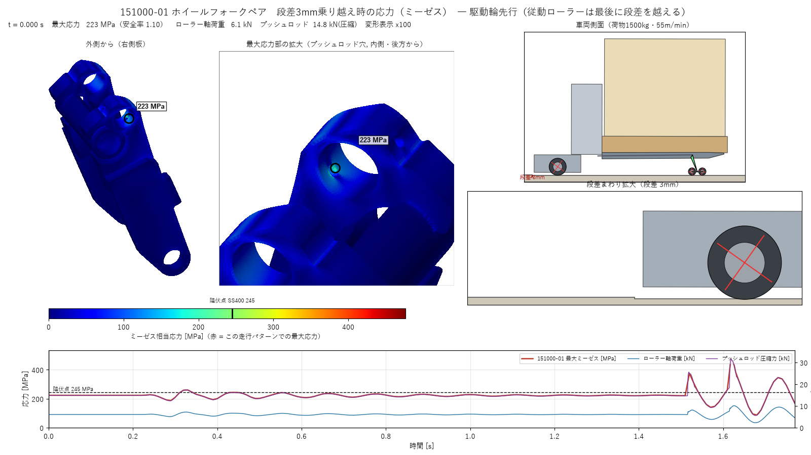
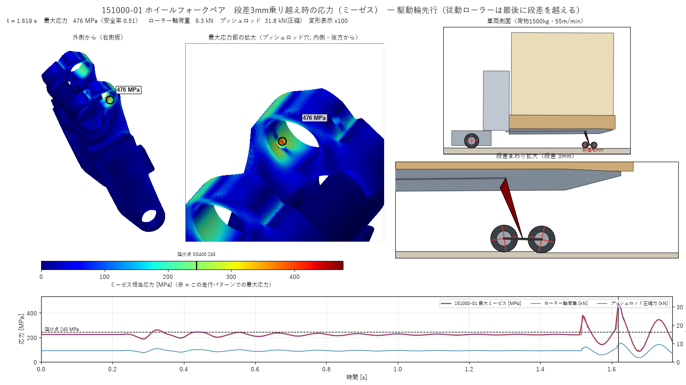

<title>151000-01 段差乗り越え強度検証</title>
<meta name="claude:viewport-fit-sides" content="cover">
<link rel="stylesheet" href="https://fonts.googleapis.com/css2?family=Zen+Kaku+Gothic+New:wght@400;500;700&family=IBM+Plex+Mono:wght@400;500&display=swap">
<style>
/* Layout: single reading column of an engineering calc sheet; results first, conditions after */
:root{
  --bg:#f6f7f8; --panel:#ffffff; --fg:#1d2329; --muted:#5b6670; --line:#d6dbe0;
  --accent:#1f5f8b; --ng:#b3261e; --ng-bg:#fbe9e7; --ok:#2e7d32; --warn:#9a6700;
  --f-body:"Zen Kaku Gothic New","Hiragino Sans","Yu Gothic","Meiryo",sans-serif;
  --f-mono:"IBM Plex Mono",ui-monospace,Consolas,monospace;
}
@media (prefers-color-scheme: dark){:root:not([data-theme="light"]){
  --bg:#14181c; --panel:#1c2227; --fg:#e4e8eb; --muted:#9aa5ae; --line:#2f373e;
  --accent:#7cb7e0; --ng:#ff8a80; --ng-bg:#3a1f1d; --ok:#81c784; --warn:#e0b75a; color-scheme:dark}}
:root[data-theme="dark"]{
  --bg:#14181c; --panel:#1c2227; --fg:#e4e8eb; --muted:#9aa5ae; --line:#2f373e;
  --accent:#7cb7e0; --ng:#ff8a80; --ng-bg:#3a1f1d; --ok:#81c784; --warn:#e0b75a; color-scheme:dark}
body{background:var(--bg);color:var(--fg);font-family:var(--f-body);font-size:15px;line-height:1.75;
  padding-left:max(16px,env(safe-area-inset-left,0px));padding-right:max(16px,env(safe-area-inset-right,0px));padding-block:28px 56px}
main{max-width:1080px;margin:0 auto;display:grid;gap:36px}
header{display:grid;gap:6px;border-bottom:2px solid var(--fg);padding-bottom:14px}
.eyebrow{font-family:var(--f-mono);font-size:12px;letter-spacing:.08em;color:var(--muted)}
h1{font-size:clamp(22px,3.4vw,30px);line-height:1.35;margin:0;font-weight:700;text-wrap:balance}
h2{font-size:19px;margin:0 0 12px;font-weight:700;text-wrap:balance;display:flex;gap:10px;align-items:baseline}
h2 .no{font-family:var(--f-mono);font-size:13px;color:var(--accent)}
h3{font-size:15px;margin:18px 0 6px}
p{margin:0 0 10px;max-width:68ch}
.verdict{display:grid;grid-template-columns:auto 1fr;gap:16px;align-items:start;background:var(--ng-bg);border:1px solid var(--ng);border-radius:6px;padding:16px 18px}
.stamp{font-weight:700;font-size:22px;color:var(--ng);border:2px solid var(--ng);padding:4px 12px;border-radius:4px;letter-spacing:.1em}
.verdict p{margin:0 0 8px}.verdict p:last-child{margin:0}
.rev{font-size:13px;border-left:3px solid var(--accent);padding:6px 12px;background:var(--panel);max-width:none}
.tablewrap{overflow-x:auto;background:var(--panel);border:1px solid var(--line);border-radius:6px}
table{border-collapse:collapse;width:100%;font-size:14px;min-width:620px}
th,td{padding:8px 12px;border-bottom:1px solid var(--line);text-align:right;white-space:nowrap}
th:first-child,td:first-child{text-align:left}
thead th{font-size:12px;color:var(--muted);font-weight:500;background:var(--bg)}
tbody tr:last-child td{border-bottom:none}
td.num{font-family:var(--f-mono);font-variant-numeric:tabular-nums}
td.old{color:var(--muted)}
.ng{color:var(--ng);font-weight:700}.ok{color:var(--ok);font-weight:700}.wn{color:var(--warn);font-weight:700}
tr.base td{background:color-mix(in srgb,var(--accent) 9%,transparent)}
figure{margin:0;display:grid;gap:8px}
figure video,figure img{width:100%;max-width:100%;border:1px solid var(--line);border-radius:4px;background:#fff}
figcaption{font-size:13px;color:var(--muted)}
.tabs{display:flex;gap:6px;flex-wrap:wrap;margin-bottom:10px}
.tabs button{font:inherit;font-size:14px;padding:6px 14px;border:1px solid var(--line);background:var(--panel);color:var(--fg);border-radius:4px;cursor:pointer}
.tabs button[aria-selected="true"]{background:var(--accent);color:var(--bg);border-color:var(--accent)}
.tabs button:focus-visible{outline:2px solid var(--accent);outline-offset:2px}
.grid2{display:grid;grid-template-columns:repeat(auto-fit,minmax(300px,1fr));gap:18px}
.grid2>*{min-width:0}
dl{display:grid;grid-template-columns:max-content 1fr;gap:4px 16px;margin:0;font-size:14px}
dt{color:var(--muted)}dd{margin:0}
ul,ol{margin:0;padding-left:1.3em;max-width:72ch}li{margin-bottom:4px}
code,.mono{font-family:var(--f-mono);font-size:13px}
.note{font-size:13px;color:var(--muted)}
@media (max-width:520px){.verdict{grid-template-columns:1fr}dl{grid-template-columns:1fr}dt{margin-top:6px}}
</style>

<main>
<header>
  <div class="eyebrow">ABM15M ／ 図番 151000-01 ホイールフォークペア ／ 動的段差乗り越え解析 ＋ 3D FEM</div>
  <h1>151000-01 段差乗り越え強度検証</h1>
  <div class="note">荷物 1500 kg（パレット1100 中央）・走行 55 m/min・<strong>段差 3 mm</strong>（直角）・側板 SS400 / パイプ STKM13A</div>
</header>

<p class="rev">改訂 2026-10-20：初版の段差6 mmは実際の使用条件より厳しすぎたため、段差を<strong>3 mm</strong>に変更し、動力学・FEM・アニメーションをすべて計算し直しました。その他の条件は初版と同じです。</p>

<section class="verdict" aria-label="判定">
  <div class="stamp">NG</div>
  <div>
  <p>段差を3 mmにすると、ピーク応力は初版（6 mm）より約3割下がりました。それでも降伏点245 MPaを超えます。
  <strong>フォーク先行で 379 MPa、駆動輪先行で 477 MPa</strong>（安全率 0.65 / 0.51）です。最大応力は初版と同じく、プッシュロッド穴（φ20.1）の縁で、外側の肉が薄い部分（肉厚 約6〜8 mm）に出ます。主応力は引張（σ1 = 456 MPa）です。</p>
  <p>根本の原因は段差の高さではありません。<strong>静的（平地走行）でもすでに 224 MPa</strong>（安全率1.10）あり、余裕がほとんど残っていないことです。段差の高さを変えて計算すると、<strong>0.5 mm の段差でも約270 MPa</strong>で降伏点を超えました（第3節）。段差条件を緩めても判定は変わらないため、穴まわりの形状の変更が必要です。</p>
  </div>
</section>

<section>
  <h2><span class="no">1</span>応力アニメーション（段差 3 mm）</h2>
  <div class="tabs" role="tablist">
    <button role="tab" id="tab-d" aria-selected="true" data-v="d">駆動輪先行（最悪）</button>
    <button role="tab" id="tab-f" aria-selected="false" data-v="f">フォーク先行</button>
  </div>
  <figure id="v-d">
    <video src="stress_drive_first.mp4" poster="stress_peak_drive_first.png" controls loop muted playsinline preload="metadata"></video>
    <figcaption>駆動輪が先に段差を越えます（t = 0.33 s で260 MPa）。約1.2秒後に、従動ローラーの前側（t = 1.52 s で374 MPa）、続いて後ろ側（t = 1.62 s）が段差の角に乗り上げます。後ろ側のときがピークの477 MPaです。色は 0〜477 MPa（赤が最大）、変形は100倍表示、再生は実時間の約1/6です。</figcaption>
  </figure>
  <figure id="v-f" hidden>
    <video src="stress_fork_first.mp4" poster="stress_peak_fork_first.png" controls loop muted playsinline preload="metadata"></video>
    <figcaption>従動ローラーの前側が先に段差の角に当たり（t = 0.19 s）、後ろ側が乗り上げた直後（t = 0.30 s）にピークの379 MPaになります。その後も車体の上下振動で、245 MPaを超えるピークが約1秒間に8回続きます。色は 0〜379 MPa（赤が最大）です。</figcaption>
  </figure>
</section>

<section>
  <h2><span class="no">2</span>結果一覧</h2>
  <div class="tablewrap"><table>
    <thead><tr><th>状態</th><th>ローラー軸荷重 kN</th><th>プッシュロッド圧縮 kN</th><th>パイプ反力 kN</th><th>最大ミーゼス MPa</th><th>最大主応力 σ1 MPa</th><th>降伏安全率</th><th>参考：6 mm 時 MPa</th></tr></thead>
    <tbody>
      <tr><td>静的（平地・荷物積載）</td><td class="num">6.1</td><td class="num">14.8</td><td class="num">16.1</td><td class="num">224</td><td class="num">214</td><td class="num wn">1.10</td><td class="num old">224</td></tr>
      <tr><td>フォーク先行 ピーク</td><td class="num">10.3</td><td class="num">25.1</td><td class="num">27.3</td><td class="num">379</td><td class="num">363</td><td class="num ng">0.65</td><td class="num old">507</td></tr>
      <tr><td>駆動輪先行 ピーク</td><td class="num">9.3</td><td class="num">31.8</td><td class="num">34.8</td><td class="num">477</td><td class="num">456</td><td class="num ng">0.51</td><td class="num old">703</td></tr>
    </tbody>
  </table></div>
  <p class="note">荷重は片側1組（151000-01 1個）あたりで、FEMの最大応力時刻の値です。駆動輪先行では、段差の角からローラーに後ろ向きの力が入ります。この力がパイプまわりのモーメントを増やすため、ローラー軸荷重は小さくてもプッシュロッド力が最大になります。</p>

  <h3>部位別の最大応力（駆動輪先行ピーク, t = 1.62 s）</h3>
  <div class="tablewrap"><table>
    <thead><tr><th>部位</th><th>静的 MPa</th><th>ピーク MPa</th><th>材料 降伏点 MPa</th><th>判定</th></tr></thead>
    <tbody>
      <tr><td>プッシュロッド穴 内面（ミーゼス最大点）</td><td class="num">224</td><td class="num">477</td><td class="num">245</td><td class="ng">NG</td></tr>
      <tr><td>プッシュロッド穴 外側の縁（自由縁, σ1）</td><td class="num">118</td><td class="num">253</td><td class="num">245</td><td class="ng">NG</td></tr>
      <tr><td>パイプ（STKM13A, 端部）</td><td class="num">90</td><td class="num">183</td><td class="num">215</td><td class="wn">OK（安全率1.18）</td></tr>
      <tr><td>パイプ-側板 溶接部（側板側）</td><td class="num">49</td><td class="num">99</td><td class="num">245</td><td class="ok">OK</td></tr>
      <tr><td>ローラー軸穴まわり</td><td class="num">37</td><td class="num">69</td><td class="num">245</td><td class="ok">OK</td></tr>
    </tbody>
  </table></div>
  <p class="note">パイプ端の値は、溶接で一体化したパイプと側板の境界の角で出ています。メッシュに依存しやすい箇所なので参考値です。6 mmではNGでしたが、3 mmでは降伏点を下回りました。</p>

  <div class="grid2" style="margin-top:16px">
    <figure><figcaption>静的状態（t = 0）</figcaption></figure>
    <figure><figcaption>駆動輪先行のピーク時（t = 1.62 s）</figcaption></figure>
  </div>
</section>

<section>
  <h2><span class="no">3</span>段差の高さと最大応力</h2>
  <p>段差の高さだけを変えて動力学を計算しました。最大応力はプッシュロッド力にほぼ比例します（3 mmのFEMで15.0 MPa/kN）。そのため、最大応力はロッド力からの比例換算で示します。6 mmの換算値は初版のFEM結果（507 / 703 MPa）と1%以内で一致しています。</p>
  <div class="tablewrap"><table>
    <thead><tr><th>段差の高さ</th><th>フォーク先行 ロッド kN</th><th>最大ミーゼス MPa</th><th>駆動輪先行 ロッド kN</th><th>最大ミーゼス MPa</th><th>判定</th></tr></thead>
    <tbody>
      <tr><td>0 mm（静的）</td><td class="num">14.8</td><td class="num">224</td><td class="num">14.8</td><td class="num">224</td><td class="wn">安全率 1.10</td></tr>
      <tr><td>0.5 mm</td><td class="num">16.7</td><td class="num">251</td><td class="num">18.2</td><td class="num">273</td><td class="ng">NG</td></tr>
      <tr><td>1.0 mm</td><td class="num">18.5</td><td class="num">277</td><td class="num">21.4</td><td class="num">321</td><td class="ng">NG</td></tr>
      <tr><td>1.5 mm</td><td class="num">20.2</td><td class="num">303</td><td class="num">24.3</td><td class="num">365</td><td class="ng">NG</td></tr>
      <tr><td>2.0 mm</td><td class="num">21.9</td><td class="num">329</td><td class="num">26.9</td><td class="num">403</td><td class="ng">NG</td></tr>
      <tr class="base"><td>3.0 mm（今回, FEM直接計算）</td><td class="num">25.1</td><td class="num">379</td><td class="num">31.8</td><td class="num">477</td><td class="ng">NG</td></tr>
      <tr><td>4.0 mm</td><td class="num">28.2</td><td class="num">423</td><td class="num">36.6</td><td class="num">549</td><td class="ng">NG</td></tr>
      <tr><td>6.0 mm（初版）</td><td class="num">33.6</td><td class="num">504</td><td class="num">47.0</td><td class="num">705</td><td class="ng">NG</td></tr>
    </tbody>
  </table></div>
  <p class="note">ウレタン車輪の段差衝撃はゼロ付近から急に立ち上がります。そのため、0.5 mmの小さな目地でも静的応力から約50 MPa上がります。現状の形状では、段差をなくす以外にこの穴縁を降伏点以下に保つ条件はありません。</p>
</section>

<section>
  <h2><span class="no">4</span>フォーク剛性に対する感度（段差 3 mm）</h2>
  <p>段差衝撃の大きさは、フォーク先端の上下剛性（フォークのたわみやすさ）で変わります。基準は 2000 N/mm（静的たわみ 約3 mm）です。他の剛性のケースは、第3節と同じく比例換算で示します。</p>
  <div class="tablewrap"><table>
    <thead><tr><th>フォーク先端剛性（片側）</th><th>フォーク先行 ロッド kN</th><th>最大ミーゼス MPa</th><th>駆動輪先行 ロッド kN</th><th>最大ミーゼス MPa</th></tr></thead>
    <tbody>
      <tr><td>1000 N/mm（柔らかめ）</td><td class="num">17.9</td><td class="num">268</td><td class="num">24.3</td><td class="num">364</td></tr>
      <tr class="base"><td>2000 N/mm（基準, FEM直接計算）</td><td class="num">25.1</td><td class="num">379</td><td class="num">31.8</td><td class="num">477</td></tr>
      <tr><td>5000 N/mm（硬め）</td><td class="num">26.9</td><td class="num">403</td><td class="num">30.9</td><td class="num">463</td></tr>
      <tr><td>剛体（上限）</td><td class="num">94.6</td><td class="num">1420</td><td class="num">63.9</td><td class="num">959</td></tr>
    </tbody>
  </table></div>
  <p class="note">最も柔らかい想定でも、駆動輪先行のピークは364 MPaで降伏点を超えます。剛性の不確かさで判定は変わりません。</p>
</section>

<section class="grid2">
  <div>
    <h2><span class="no">5</span>解析モデル</h2>
    <h3>動力学（側面2D、左右対称）</h3>
    <ul>
      <li>車体（フレーム・フォーク・駆動ユニット・荷物）を1つの剛体として扱います。油圧はロックし、ベルクランクとプッシュロッドは固定です。</li>
      <li>フォーク先端（151000-01・タンデムローラー）は、ばね（2000 N/mm）で上下に支えます。減衰比は5%です。</li>
      <li>タンデムローラー（R32.5、ピッチ90）はローラー軸穴まわりに揺動できます。駆動輪はR75です。</li>
      <li>ウレタン車輪の接触は F = Kδ<sup>1.5</sup>(1+αδ̇) で表します（ローラーは3 kNで0.5 mm、駆動輪は6 kNで1 mm沈む設定、α = 1.3 s/m）。</li>
      <li>駆動輪は55 m/minを保つように牽引します（μ = 0.6 で頭打ち）。段差は<strong>高さ3 mm</strong>の直角段差です。</li>
    </ul>
    <h3>FEM（151000-01単体）</h3>
    <ul>
      <li>STEP の「151000-01ビードあり」を使用しました。2次四面体 約33万要素（156万自由度）、穴まわりは1 mmメッシュです。</li>
      <li>パイプと側板のすき間（約1.1 mm、開先溶接部）は溶接金属で埋まっているとみなし、一体化しました。</li>
      <li>パイプ内面（フレームへの揺動ピン）は固定、ローラー軸穴とプッシュロッド穴にはピン荷重（cos分布）を左右の側板へ1/2ずつかけました。</li>
      <li>プッシュロッド力は、151000-01単体のパイプ中心まわりのモーメント釣り合いから求めました（静的でローラー軸荷重の2.45倍）。</li>
      <li>メッシュ収束：全体3 mmでは224 MPa、局所1 mmでは224 MPa（差は1%未満）です。</li>
    </ul>
  </div>
  <div>
    <h2><span class="no">6</span>前提と仮定</h2>
    <dl>
      <dt>段差</dt><dd>3 mm（直角、角は鋭角）。初版の6 mmから変更</dd>
      <dt>荷物</dt><dd>1500 kg。重心はバックレストから550 mm、フォーク上面から500 mm（荷姿の高さ1000を仮定）</dd>
      <dt>車両自重</dt><dd>300 kg（STEPの体積から推定）、重心 Y −950 / Z 400</dd>
      <dt>リフト状態</dt><dd>STEPの状態（フォーク上面 Z 201）</dd>
      <dt>フォーク剛性</dt><dd>2000 N/mm（C形鋼 約150×45 t4。片持ち梁と、パレットに支えられる状態の中間を想定）</dd>
      <dt>材料</dt><dd>E = 206 GPa、ν = 0.3。SS400 σy 245、STKM13A σy 215 MPa</dd>
      <dt>無視したもの</dt><dd>スタビライザキャスタ、151000-01の自重・慣性、ピン穴のすき間、溶接の残留応力</dd>
    </dl>
  </div>
</section>

<section>
  <h2><span class="no">7</span>対策案</h2>
  <p>段差3 mmで安全率1.5を確保するには、穴縁の応力を477 MPaから163 MPa以下に下げる必要があります（現状の約1/3）。段差の条件を緩めるだけでは届かないため、形状の変更が前提になります。</p>
  <ol>
    <li><strong>プッシュロッド穴まわりの肉を増やします。</strong>穴の外側の縁までの距離（現状 約6〜8 mm）を広げるか、ボス外形を大きくします。静的でも安全率は1.1しかないため、最優先です。</li>
    <li><strong>レバー比を見直します。</strong>プッシュロッド穴をパイプ中心からさらに離すと（現状のモーメントアームは22.7 mm）、ロッド力と穴縁の応力が比例して下がります。1/3にするには、肉の追加と組み合わせる必要があります。</li>
    <li><strong>材料を高強度にします。</strong>SS400から高張力鋼などに変えます。ただし、フォーク先行では1回の段差で降伏点を超える振動が約8回続くため、疲労の観点では形状の改善を優先します。</li>
    <li><strong>現物で確認します。</strong>実機で穴縁にひずみゲージを貼り、段差を越えるときの応力を測ると、フォーク剛性と減衰の仮定を検証できます。</li>
  </ol>
</section>

<section>
  <h2><span class="no">8</span>ファイル</h2>
  <p class="mono" style="overflow-wrap:anywhere">D:\Github\structure\01_sim\151000\</p>
  <ul class="mono" style="font-size:13px">
    <li>mesh_part.py：STEPから151000-01を抽出して溶接部を一体化し、メッシュを作成</li>
    <li>sim2d.py：段差乗り越えの動力学（段差は <code>PAR['h_step']</code>、<code>--sens</code>でフォーク剛性の感度）</li>
    <li>fem.py：tet10の線形FEM（全フレームを一括で解く）</li>
    <li>principal.py：主応力の確認</li>
    <li>animate.py：応力アニメーション（MP4・PNG）</li>
    <li>step_sweep.json：段差の高さを0.5〜6 mmで変えた結果</li>
  </ul>
</section>
</main>

<script>
document.querySelectorAll('.tabs button').forEach(b=>b.addEventListener('click',()=>{
  document.querySelectorAll('.tabs button').forEach(x=>x.setAttribute('aria-selected',x===b?'true':'false'));
  ['d','f'].forEach(k=>{const fg=document.getElementById('v-'+k);fg.hidden=(k!==b.dataset.v);if(fg.hidden)fg.querySelector('video').pause();});
}));
</script>
